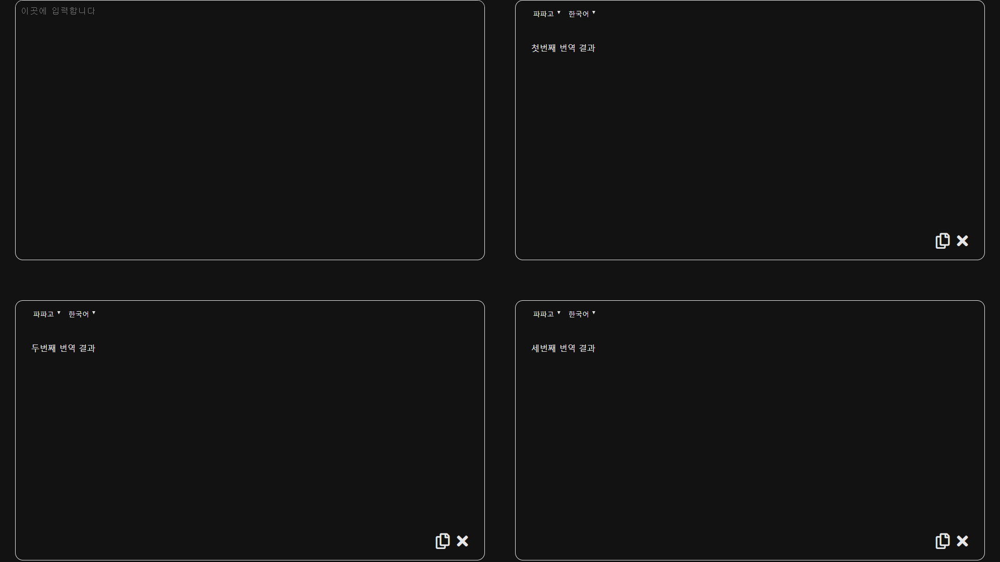

제가 '멋쟁이사자처럼'에서 만들고 싶은 서비스는 여러 번역기를 한 화면에서 이용하는 서비스입니다. 현재 여러 회사에서 번역서비스를 제공하고 있습니다. 저는 Google 번역, Naver의
Papago, Kakao 번역을 이용하는데, 이것들의 번역 결과가 일치할 때도, 다를 때도 있어,번역이 조금 더 옳게 되었다고 느껴지는 번역기가 다릅니다. 그래서 저는 번역기를 이용할
때, 보다 자연스러운 결과를 얻고 싶어 3개의 번역기를 모두 이용하여 더 좋은 결과물을 얻어 왔습니다. 하지만 모두 다른 곳에서 서비스하므로 이동하는 번거로움을 느꼈고 이 서비스를 한
화면에서 이용하면 편리하겠다고 생각했습니다.
서비스 구현 방식은 원하는 번역문장을 입력하면 3개의 번역기에서 동시에 한 화면에 번역 결과를 출력해 주는 것입니다. 한눈에 3개의 결과를 알 수 있고, 편하게 자연스러운 번역 결과를
얻어내는 데에 도움이 될 것입니다. 기본적인 틀은 공간을 4분할 하고 한 곳을 입력공간으로 하고 나머지는 번역 결과 출력공간으로 합니다.

<초안은 이곳을 눌러주세요>
첫째로 단어 검색기능입니다. 문장을 입력 받았을 때 공백문자 " "를 기준으로 단어를 구분해서 각각을 오브젝트화 한 다음, 클릭하면 사용자가 설정해둔 사전 웹페이지로 이동하여 단어 검색결과를 보여줍니다.
둘째로 번역결과 창에 복사 버튼을 두고 (파파고 처럼) 원클릭으로 클립보드에 복사를 시킵니다.
셋째로 유용성이 의심되지만.. 번역기와 언어를 선택할 수 있게 하고싶습니다. 예를들어 세 구역의 번역기를 모두 파파고로 설정하고 언어를 각각 영어, 일본어, 중국어로 설정해둬서 한 번에 3가지의 언어로 번역하는 것입니다.
넷째로 테마를 커스터마이징할 수 있는 기능을 추가하고 싶습니다. 아무래도 디자인이 중요하고 호불호가 확실한 부분인 만큼 스스로 폰트색상, 배경색, 경계선 색, 아이콘 디자인 등을 직접 디자인 할 수 있도록 합니다.
새로운 아이디어가 떠오를 때마다 마구마구 추가합니다..
아직 수익구조에 대해 아는 바는 적지만 나름대로 생각해 보았습니다.
가장 기본적으로는 광고가 떠오릅니다. 요즘 무료어플이나 유튜브 마냥 광고를 봐야 기능을 수행하도록 하는 것은 편하게 바로바로 써야하는 번역기의 특성에 알맞지 않기때문에 배너광고 정도만
살짝 띄워두는게 좋다고 생각합니다.
로그인과 구독 혹은 구매에 따른 라이센스 관리까지 기능을 구현할 수 있을진 모르겠지만, 구매 혹은 구독 라이센스를 만들어 수익을 창출하는 방법을 생각했습니다.
기본적으로 번역 가능 글자 수를 단어 40개 미만으로 제한하고, 단어를 클릭해서 바로 사전 웹페이지에 검색해주는 기능도 제한합니다. 라이센스를 구매 혹은 구독하면 글자 수의 제한을
해제하고, 단어를 원클릭으로 검색하는 기능을 열어줍니다.
그리고, 무료로 3가지 정도의 테마를 제공하고, 라이센스를 구매하면 여러 테마를 설정할 수 있게하고 커스터마이징 기능을 열어줍니다.
새로운 아이디어가 떠오를 때마다 마구마구 추가합니다..